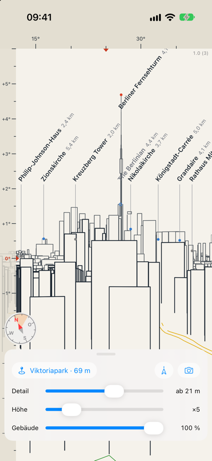

Was ist das für ein Turm dort hinten? CityPanorama zeichnet die Stadt so, wie du sie von deinem Standort aus siehst — als Linienbild der Skyline, mit Namen und Entfernung an jedem Wahrzeichen. Wie ein Gipfelfinder, nur für die Stadt.

Die Daten decken derzeit nur Berlin ab.
Fragen, Fehler, Wünsche: deepframe.support@gmail.com. Hilfreich sind dein Standort (ungefähr reicht), die Blickrichtung und ein Bildschirmfoto.
Der Kompass liegt daneben? Zwischen Häusern lenken Stahl und Beton ihn ab. Richte das iPhone auf ein Wahrzeichen, das du siehst — etwa den Fernsehturm — und wische das Bild zur Seite, bis sein Name darüber steht. Der Ausgleich bleibt gespeichert; der Knopf mit dem Pfeil setzt ihn zurück.
Ein Gebäude fehlt? Gezeichnet wird, was in OpenStreetMap eine Höhe trägt. Wer die Höhe dort einträgt, sieht es mit der nächsten Datenfassung.
Die App erhebt keine Daten. Einzelheiten in der Datenschutzerklärung.
Gebäude, Orte, Wasser, Parks, Straßen und Bahn © OpenStreetMap-Mitwirkende (ODbL). Gelände: Mapzen Terrain Tiles (Amazon Web Services Open Data).
© 2026 AK · CityPanorama (Privatperson, Deutschland)